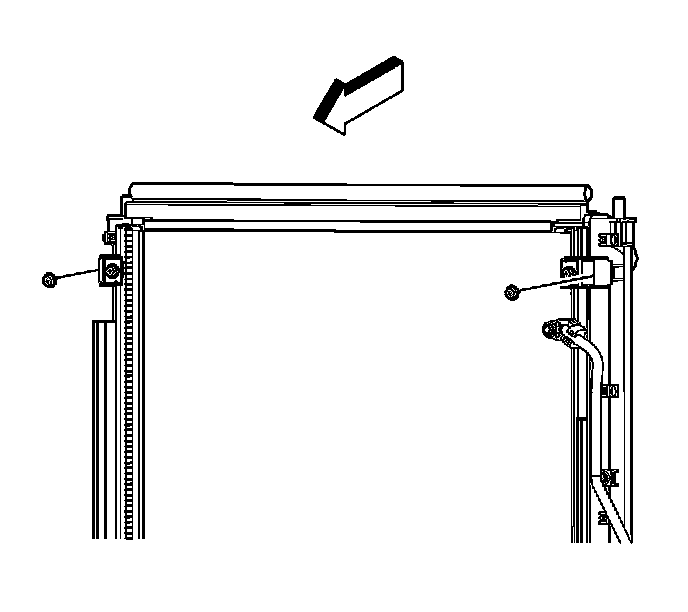
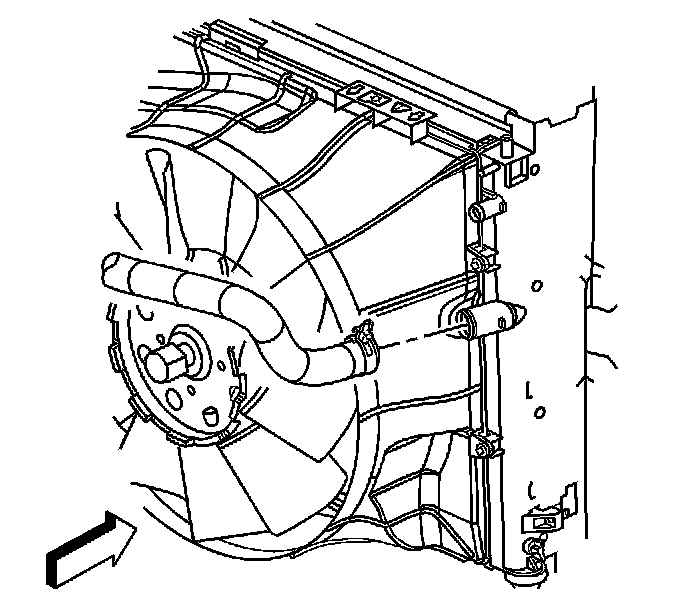
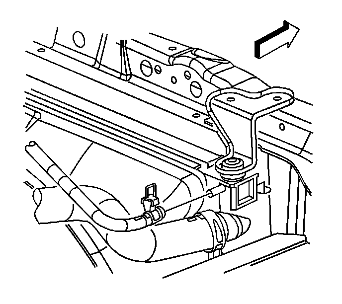

Heavy Duty Cooling
Radiator Replacement (LH2 - Heavy Duty Cooling)
Tools Required
J 38185 Hose Clamp Pliers
Removal Procedure
1. Drain the coolant. Refer to Cooling System Draining and Filling (GE 47716 -Vac N Fill Coolant Refill Tool) (Service and Repair)Cooling System Draining and Filling (Static Fill) (Service and Repair) .
2. Remove the electric cooling fan. Refer to Engine Cooling Fan Replacement (LH2 - Heavy Duty Cooling) (Service and Repair).

3. Remove the upper condenser mounting bolts.

4. Remove the lower condenser mounting bolts.

5. Disconnect the side air baffle lower retaining pins from the radiator.
Important: Reposition the condenser to access the transmission oil cooler mounting bolts.
6. Remove the transmission oil cooler (TOC) mounting bolts.
7. Lower the vehicle.
8. Remove the fan shroud. Refer to Fan Shroud Replacement (LH2 - Gas, 8 Cylinder, 4.6L, SFI, V8, DOHC, HO) (Service and Repair) .
9. Using the J 38185 , disengage the tension on the hose clamp and remove the radiator outlet hose from the radiator.

10. Using the J 38185 , disengage the tension on the hose clamp and remove the radiator inlet hose from the radiator.

11. Using the J 38185 , disengage the tension on the hose clamp and remove the surge tank inlet hose from the radiator.

12. Remove the radiator support bracket bolts.
13. Remove the radiator support brackets.
14. Disconnect the upper air baffle retaining pins from the radiator.
15. Remove the radiator.
Installation Procedure
1. Install the radiator.
2. Connect the upper air baffle retaining pins to the radiator.
3. Install the radiator support brackets.
Notice: Refer to Fastener Notice .
4. Install the radiator support bracket bolts.
Tighten the bolts to 9 N.m (80 lb in).
5. Connect the surge tank inlet hose to the radiator and using the J 38185 , position the surge tank inlet hose clamp to secure the hose.
6. Connect the radiator inlet hose to the radiator and using the J 38185 , position the radiator inlet hose clamp to secure the hose.
7. Connect the radiator outlet hose to the radiator and using the J 38185 , position the radiator outlet hose clamp to secure the hose.
8. Install the fan shroud. Refer to Fan Shroud Replacement (LH2 - Gas, 8 Cylinder, 4.6L, SFI, V8, DOHC, HO) (Service and Repair) .
9. Raise and support the vehicle.
10. Install the TOC mounting bolts.
Tighten the bolts to 5 N.m (44 lb in).
11. Connect the side air baffle lower retaining pins to the radiator.
12. Install the lower condenser mounting bolts.
Tighten the bolts to 6.5 N.m (58 lb in).
13. Install the upper condenser mounting bolts.
Tighten the bolts to 6.5 N.m (58 lb in).
14. Install the electric cooling fan. Refer to Engine Cooling Fan Replacement (LH2 - Heavy Duty Cooling) (Service and Repair)
15. Fill the cooling system. Refer to Cooling System Draining and Filling (GE 47716 -Vac N Fill Coolant Refill Tool) (Service and Repair)Cooling System Draining and Filling (Static Fill) (Service and Repair) .